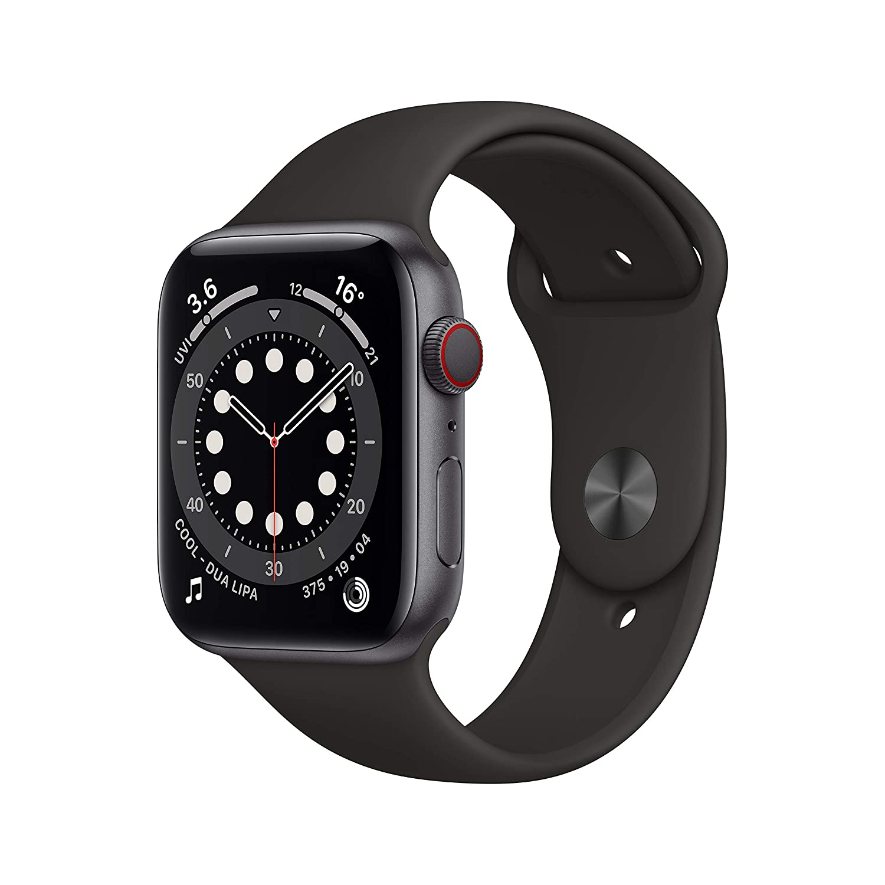
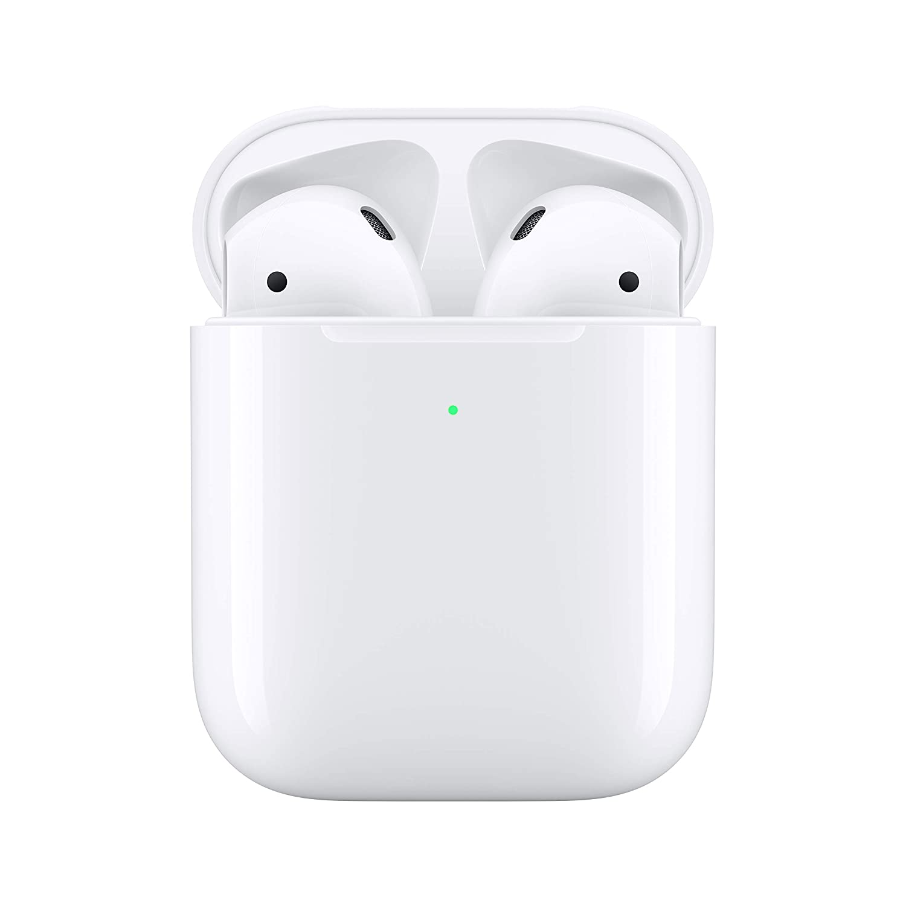
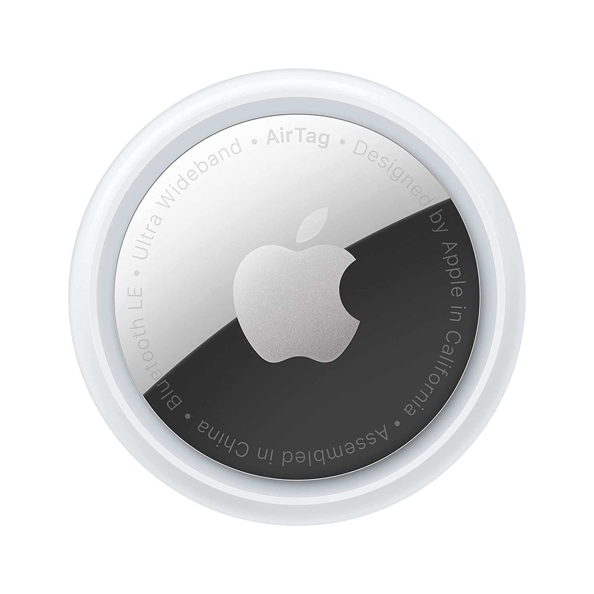
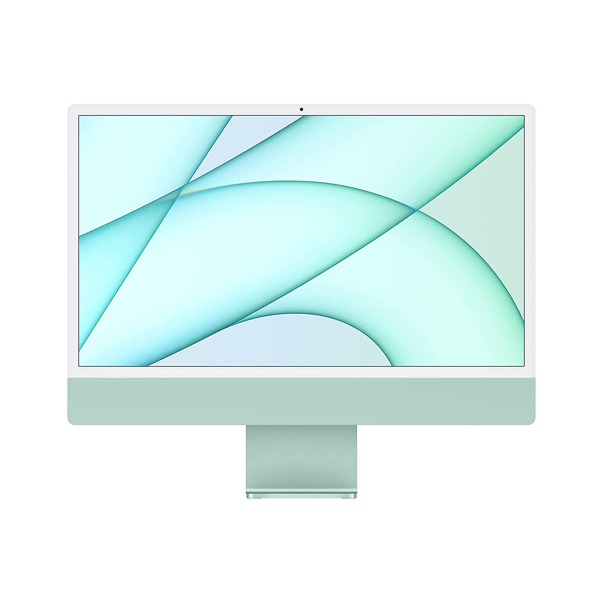

About this item:
6.7-inch (17 cm diagonal) Super Retina XDR display
Ceramic Shield, tougher than any smartphone glass
A14 Bionic chip, the fastest chip ever in a smartphone
Pro camera system with 12MP Ultra Wide, Wide and Telephoto cameras; 5x optical zoom range; Night mode,
Deep Fusion, Smart HDR 3, Apple ProRAW, 4K Dolby Vision HDR recording
About this item:
Ninth-generation 6-core Intel Core i7 processor
Stunning 16-inch Retina display with True Tone technology
Touch Bar and Touch ID
AMD Radeon Pro 5300M graphics with GDDR6 memory
Ultrafast SSD
Intel UHD Graphics 630
Six-speaker system with force-cancelling woofers

About this item:
GPS + Cellular model lets you call, text, and get directions without your phone
Measure your blood oxygen with an all-new sensor and app
Check your heart rhythm with the ECG app
The Always-On Retina display is 2.5x brighter outdoors when your wrist is down
S6 SiP is up to 20% faster than Series 5
5GHz Wi-Fi and U1 Ultra Wideband chip

About this item:
Automatically on, automatically connected
Easy setup for all your Apple devices
Quick access to Siri by saying “Hey Siri”
Double-tap to play or skip forward
New Apple H1 headphone chip delivers faster wireless connection to your devices
Charges quickly in the case
Case can be charged either wirelessly using a Qi-compatible charging mat or using the Lightning connector

About this item:
Keep track of and find your items alongside friends and devices in the Find My app
Simple one-tap setup instantly connects AirTag with your iPhone or iPad
Play a sound on the built-in speaker to help find your things, or just ask Siri for help

About this item:
Immersive 60.96 cm (24-inch) 4.5K Retina display with P3 wide color gamut and 500 nits of brightness
Apple M1 chip delivers powerful performance with 8-core CPU and 7-core GPU
Strikingly thin 11.5 mm design in vibrant colors
1080p FaceTime HD camera with M1 ISP for amazing video quality